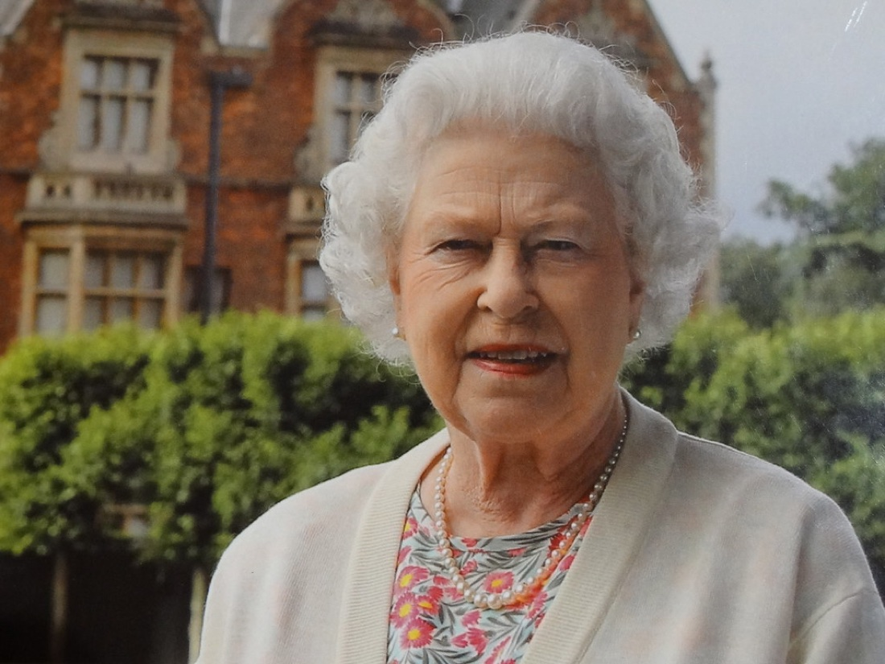
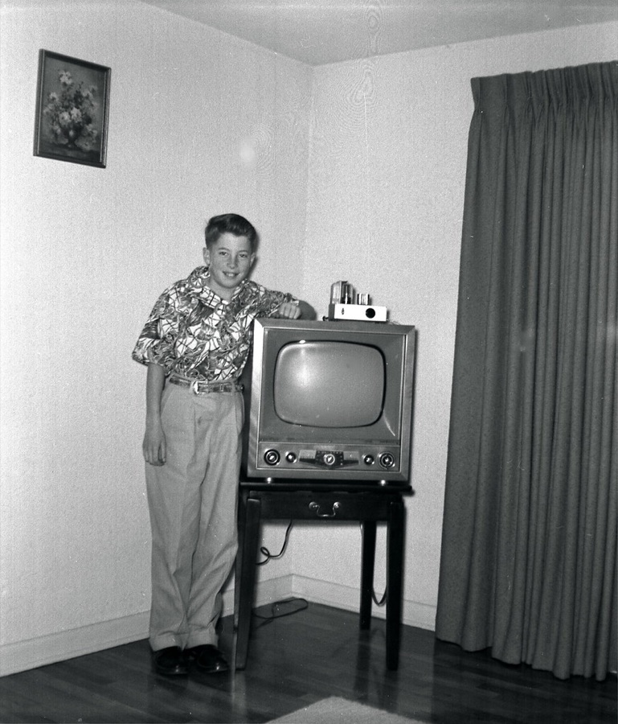
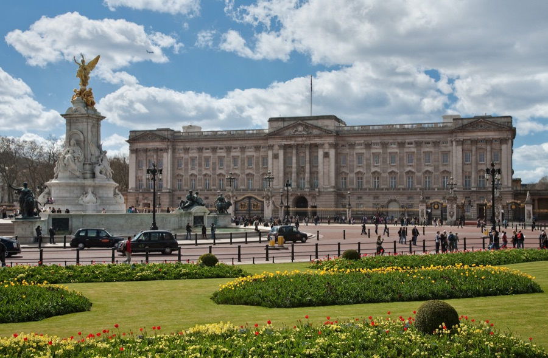

<title>Елизавета II — королева, корги и 70 лет стажа</title>
<meta charset="UTF-8">
<meta name="viewport" content="width=device-width, initial-scale=1.0">
<style>
  :root {
    --accent: #5b2c6f;
    --accent-dark: #3d1d4a;
    --accent-soft: #efe6f4;
    --bg: #faf8fb;
    --surface: #ffffff;
    --text: #2b2530;
    --muted: #6b6272;
    --border: #e8e1ee;
    --shadow: 0 12px 30px rgba(59, 26, 77, 0.10);
  }

  * { box-sizing: border-box; }

  html { scroll-behavior: smooth; }

  body {
    margin: 0;
    background: var(--bg);
    color: var(--text);
    font-family: -apple-system, BlinkMacSystemFont, "Segoe UI", Roboto, Helvetica, Arial, sans-serif;
    line-height: 1.65;
    -webkit-font-smoothing: antialiased;
  }

  h1, h2, h3, h4 {
    font-family: Georgia, "Times New Roman", serif;
    font-weight: 700;
    line-height: 1.25;
    margin: 0 0 0.6em;
    color: var(--accent-dark);
  }

  p { margin: 0 0 1.1em; }

  ul { margin: 0 0 1.1em; padding-left: 1.3em; }
  li { margin-bottom: 0.5em; }

  a { color: var(--accent); }

  .container {
    max-width: 860px;
    margin: 0 auto;
    padding: 0 1.5rem;
  }

  /* ---------- Hero ---------- */

  .hero {
    position: relative;
    min-height: 78vh;
    display: flex;
    align-items: center;
    justify-content: center;
    background: linear-gradient(135deg, #2a1a3a 0%, #3d2547 100%);
    color: #fff;
  }

  .hero-content {
    padding: 3rem 1.5rem;
    max-width: 720px;
    margin: 0 auto;
    width: 100%;
    display: flex;
    gap: 3rem;
    align-items: center;
  }

  .hero-portrait {
    flex-shrink: 0;
    width: 240px;
    height: 300px;
    border-radius: 8px;
    border: 8px solid #141018;
    overflow: hidden;
    box-shadow: 0 20px 50px rgba(0, 0, 0, 0.4);
  }

  .hero-portrait img {
    width: 100%;
    height: 100%;
    object-fit: cover;
  }

  .hero-text {
    flex: 1;
  }

  .eyebrow {
    text-transform: uppercase;
    letter-spacing: 0.14em;
    font-size: 0.8rem;
    color: #e6d3ee;
    margin-bottom: 0.8em;
    font-weight: 600;
  }

  .hero h1 {
    color: #fff;
    font-size: clamp(2rem, 6vw, 3.4rem);
    margin-bottom: 0.25em;
  }

  .hero-sub {
    font-size: clamp(1.05rem, 2.4vw, 1.3rem);
    color: #f1e6f5;
    margin-bottom: 0.9em;
    font-style: italic;
  }

  .hero-lede {
    max-width: 58ch;
    color: #ece2f0;
    font-size: 1.02rem;
    margin-bottom: 0;
  }

  /* ---------- Sections ---------- */

  .section {
    padding: 4.5rem 0;
  }

  .section.alt {
    background: var(--surface);
    border-top: 1px solid var(--border);
    border-bottom: 1px solid var(--border);
  }

  .section h2 {
    font-size: clamp(1.6rem, 4vw, 2.1rem);
    position: relative;
    padding-bottom: 0.4em;
    margin-bottom: 1em;
  }

  .section h2::after {
    content: "";
    position: absolute;
    left: 0;
    bottom: 0;
    width: 3.2rem;
    height: 4px;
    background: var(--accent);
    border-radius: 2px;
  }

  .section h3 {
    font-size: 1.2rem;
    margin-top: 1.8em;
  }

  blockquote {
    margin: 1.6em 0;
    padding: 0.9em 1.3em;
    border-left: 4px solid var(--accent);
    background: var(--accent-soft);
    color: var(--accent-dark);
    font-style: italic;
    border-radius: 0 8px 8px 0;
  }

  blockquote p { margin: 0; }

  .lede {
    font-size: 1.1rem;
    color: var(--muted);
  }

  /* ---------- Project cards ---------- */

  .project-grid {
    display: grid;
    grid-template-columns: repeat(auto-fit, minmax(230px, 1fr));
    gap: 1.5rem;
    margin: 1.8em 0 2em;
  }

  .project-card {
    background: var(--bg);
    border: 1px solid var(--border);
    border-radius: 14px;
    overflow: hidden;
    box-shadow: var(--shadow);
    display: flex;
    flex-direction: column;
  }

  .project-card img {
    width: 100%;
    aspect-ratio: 4 / 3;
    object-fit: cover;
    display: block;
  }

  .project-text {
    padding: 1.1rem 1.2rem 1.3rem;
  }

  .project-text h4 {
    font-family: Georgia, serif;
    color: var(--accent-dark);
    font-size: 1.05rem;
    margin: 0 0 0.5em;
  }

  .project-text p {
    color: var(--muted);
    font-size: 0.95rem;
    margin: 0;
  }

  /* ---------- Facts ---------- */

  .facts-grid {
    display: grid;
    grid-template-columns: repeat(auto-fit, minmax(240px, 1fr));
    gap: 2rem 2.5rem;
    margin: 1.5em 0;
  }

  .fact-block h3 { margin-top: 0; }

  /* ---------- Finale ---------- */

  .finale {
    position: relative;
    min-height: 60vh;
    display: flex;
    align-items: center;
    justify-content: center;
    text-align: center;
    background-image:
      linear-gradient(180deg, rgba(25,12,35,0.62) 0%, rgba(20,8,30,0.72) 100%),
      url("images/corgi.jpg");
    background-size: cover;
    background-position: center 45%;
    color: #fff;
    padding: 3rem 1.5rem;
  }

  .finale blockquote {
    background: none;
    border: none;
    color: #fff;
    font-family: Georgia, serif;
    font-size: clamp(1.2rem, 3vw, 1.7rem);
    max-width: 42ch;
    margin: 0 auto;
    padding: 0;
    line-height: 1.5;
  }

  .finale blockquote::before,
  .finale blockquote::after {
    color: #e6d3ee;
    font-size: 1.3em;
  }

  /* ---------- Footer ---------- */

  footer {
    background: var(--accent-dark);
    color: #d8c7e0;
    padding: 1.6rem 1.5rem 2rem;
    font-size: 0.75rem;
    line-height: 1.7;
  }

  footer .container { max-width: 860px; }

  footer p { margin: 0 0 0.3em; }

  footer a { color: #e6d3ee; }

  footer .credits-title {
    text-transform: uppercase;
    letter-spacing: 0.08em;
    font-weight: 600;
    color: #f1e6f5;
    margin-bottom: 0.5em;
  }

  /* ---------- Responsive ---------- */

  @media (max-width: 600px) {
    .hero { min-height: auto; padding: 2rem 0; }
    .hero-content {
      padding: 2rem 1.25rem;
      flex-direction: column;
      gap: 1.5rem;
    }
    .hero-portrait { width: 200px; height: 250px; }
    .section { padding: 3rem 0; }
    .container { padding: 0 1.25rem; }
    .finale { min-height: 46vh; }
    .project-grid { grid-template-columns: 1fr 1fr; }
  }

  @media (max-width: 420px) {
    .project-grid { grid-template-columns: 1fr; }
  }
</style>

<header class="hero">
  <div class="hero-content">
    <div class="hero-portrait">
      
    </div>
    <div class="hero-text">
      <p class="eyebrow">Её Величество</p>
      <h1>Елизавета Александра Мария</h1>
      <p class="hero-sub">Королева Елизавета II — или просто «та самая бабушка с корги»</p>
      <p class="hero-lede">Родилась 21 апреля 1926 года в Лондоне. Взошла на престол в 1952-м, в 25 лет, и правила 70 лет подряд — ни разу не пожаловавшись и ничего не объяснив.</p>
    </div>
  </div>
</header>

<main>

  <section class="section" id="about">
    <div class="container">
      <h2>Обо мне</h2>
      <p class="lede">Королевой я быть вообще не собиралась. Трон должен был достаться моему дяде, но он взял и отрёкся ради любви, корона перешла моему отцу, а я из просто принцессы вдруг стала наследницей. Так что мой главный карьерный взлёт случился, когда я об этом даже не просила. Бывает.</p>

      <h3>Какая я</h3>
      <p>Снаружи я — улыбчивая невысокая старушка в шляпке кислотного цвета. И цвет, между прочим, не случаен: если ты глава государства, тебя должно быть видно в толпе за километр.</p>
      <blockquote><p>«Меня должно быть видно, чтобы в меня поверили» — это не про тщеславие, это про работу.</p></blockquote>
      <p>Внутри же за ямочками и вежливой улыбкой прячется женщина, которая правила 70 лет и пересидела на троне даже собственную прапрабабушку Викторию. Мой девиз: <strong>«Never complain, never explain»</strong> — никогда не жалуйся и ничего не объясняй. За семьдесят лет я не дала ни одного интервью и не сказала лишнего. Молчание тоже стратегия, причём сильно недооценённая.</p>

      <h3>Немного судьбы</h3>
      <ul>
        <li>Взошла на престол в <strong>1952 году, в 25 лет</strong>. Новость о смерти отца застала меня в Кении, если верить легенде, буквально на дереве в отеле посреди сафари. Уехала принцессой, вернулась королевой.</li>
        <li>Вышла замуж за <strong>принца Филиппа</strong> и прожила с ним <strong>73 года</strong>, дольше, чем существуют иные государства. Он ласково звал меня «капустка», я не возражала.</li>
        <li>Вырастила <strong>четверых детей</strong>, кучу внуков и правнуков и пережила столько семейных драм, что моей родне впору выдавать сериал.</li>
        <li>При мне сменилось <strong>15 премьер-министров</strong>, от Уинстона Черчилля и дальше. Каждую неделю аудиенция: они рассказывают, я слушаю, киваю и делаю выводы. Выводы держу при себе.</li>
      </ul>
      <p>Я застала чёрно-белое телевидение и смартфоны, отправила свой первый твит уже сильно за восемьдесят и снялась в скетче с Джеймсом Бондом. Не каждая бабушка таким похвастается.</p>
      <p>Если коротко: я маленькая улыбчивая женщина с сумочкой, стайкой корги и семью десятилетиями непрерывной работы за плечами. Очень приятно.</p>
    </div>
  </section>

  <section class="section alt" id="work">
    <div class="container">
      <h2>Чем занимаюсь</h2>
      <p class="lede">Люди думают, что королева только перерезает ленточки и машет рукой из кареты. Люди сильно недооценивают объём работы.</p>

      <h3>Главный актив: бренд «Монархия»</h3>
      <p>Я унаследовала институт, которому больше тысячи лет, и семьдесят лет держала его на плаву в мире, который менялся быстрее, чем я успевала менять шляпки. Пала Британская империя, распустились колонии, сменились целые эпохи, а корона всё ещё здесь, узнаваемая и востребованная. Мой продукт — <strong>стабильность</strong>: незаменимость через постоянство.</p>

      <h3>Портфель проектов</h3>
      <div class="project-grid">
        <article class="project-card">
          
          <div class="project-text">
            <h4>Содружество наций</h4>
            <p>56 стран, больше двух миллиардов человек, добровольная глобальная сеть без единого выстрела. Ни один стартап так не масштабировался.</p>
          </div>
        </article>
        <article class="project-card">
          
          <div class="project-text">
            <h4>Медиа и связь с аудиторией</h4>
            <p>Рождественское обращение выходит каждый год с 1957-го — личный прямой канал к подданным без всяких посредников.</p>
          </div>
        </article>
        <article class="project-card">
          
          <div class="project-text">
            <h4>Ресурсы</h4>
            <p>Дворцы, конюшня чистокровных лошадей, сумочка Launer и три поколения семьи, которых надо держать в узде. Последнее — самая тяжёлая работа из всех.</p>
          </div>
        </article>
      </div>

      <p>Дипломатия и мягкая сила — мой основной инструмент: государственные визиты, приёмы, рукопожатия с сотнями лидеров. А ещё кризис-менеджмент — незаявленная, но ключевая компетенция. У меня был год, который я сама назвала «annus horribilis», были скандалы, потери и настоящие бури. Я прошла через всё это, ни разу не повысив голос. Спокойствие как суперспособность.</p>
    </div>
  </section>

  <section class="section" id="facts">
    <div class="container">
      <h2>Интересные факты</h2>
      <p class="lede">Досье для тех, кто хочет узнать меня поближе. Всё чистая правда, врать королеве не к лицу, хотя приукрасить самую малость я, конечно, могу.</p>

      <div class="facts-grid">
        <div class="fact-block">
          <h3>Корги, разумеется корги</h3>
          <ul>
            <li>За жизнь у меня было больше тридцати корги, и почти все — потомки моей самой первой собаки Сьюзан, подаренной мне на 18-летие.</li>
            <li>Я даже вывела новую породу: скрестила корги с таксой и получила «дорги». Селекция на дому, ничего особенного.</li>
            <li>Мои корги ели с хорошего фарфора и слушались меня, пожалуй, лучше, чем некоторые премьер-министры.</li>
          </ul>
        </div>
        <div class="fact-block">
          <h3>Привычки и характер</h3>
          <ul>
            <li>Всегда одевалась в яркие однотонные цвета: мятный, фуксия, канареечный — чтобы меня было видно издалека в любой толпе.</li>
            <li>Моя сумочка — это не аксессуар, а пульт управления. Перекладываю с руки на руку — значит, пора спасать меня из скучного разговора.</li>
            <li>Обожаю лошадей и скачки едва ли не больше всего на свете, разбираюсь в родословных не хуже, чем в своей собственной.</li>
            <li>Водить умела прекрасно, а вот прав у меня не было: единственный человек в стране, кому они не нужны.</li>
          </ul>
        </div>
        <div class="fact-block">
          <h3>Неочевидное</h3>
          <ul>
            <li>Во Вторую мировую, юная принцесса, пошла в армию: чинила грузовики и работала водителем.</li>
            <li>На Олимпиаде-2012 «прыгнула с парашютом» вместе с Джеймсом Бондом — снялась в скетче с Дэниелом Крейгом.</li>
            <li>На Платиновом юбилее пила чай с медвежонком Паддингтоном и призналась, что тоже держу в сумочке бутерброд с мармеладом.</li>
            <li>Отправила своё первое электронное письмо ещё в 1976 году, а первый твит — уже глубоко бабушкой.</li>
          </ul>
        </div>
      </div>

      <h3>Как со мной работать</h3>
      <p>Я ценю пунктуальность, чувство долга и хорошо воспитанных собак. Не выношу нытьё, суету и тех, кто жалуется вместо того, чтобы работать. Хотите мне угодить — будьте надёжны, приходите вовремя, погладьте корги и заварите крепкий чай. И помните мой главный принцип: я никогда не жалуюсь и ничего не объясняю. Улыбаюсь, машу рукой и делаю своё дело семьдесят лет подряд. Учитесь.</p>
    </div>
  </section>

</main>

<section class="finale">
  <blockquote>«Я — маленькая улыбчивая женщина с сумочкой, стайкой корги и семью десятилетиями непрерывной работы за плечами. Очень приятно.»</blockquote>
</section>

<footer>
  <div class="container">
    <p class="credits-title">Источники изображений</p>
    <p>«Queen Elizabeth II at Sandringham» — автор IainCameron, <a href="https://creativecommons.org/licenses/by/2.0/">CC BY 2.0</a>.</p>
    <p>«Commonwealth flag Ottawa» — автор Montrealais, <a href="https://creativecommons.org/licenses/by/3.0/">CC BY 3.0</a>.</p>
    <p>«Early 1950s Television Set» — автор gbaku, <a href="https://creativecommons.org/licenses/by-sa/2.0/">CC BY-SA 2.0</a>.</p>
    <p>«Buckingham Palace, London — April 2009» — автор Diliff, <a href="https://creativecommons.org/licenses/by-sa/3.0/">CC BY-SA 3.0</a>.</p>
    <p>«Pembroke Welsh Corgi.» — автор Bernard Spragg, <a href="https://creativecommons.org/publicdomain/zero/1.0/">CC0 1.0</a>.</p>
  </div>
</footer>
